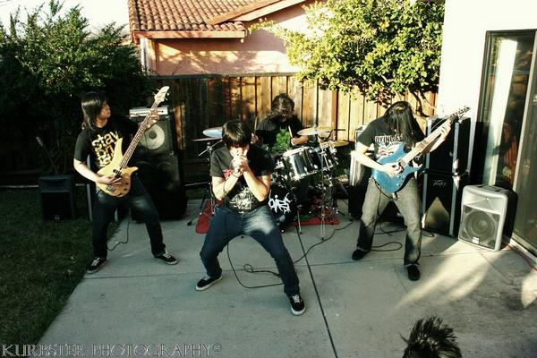

20 July 2026 · answers by Juan (drums)

Memoirs, back in the day · photo by Kurbster Photography (via Metal Archives)
This is the first post of a blog I've wanted to start for a long time — a personal space to write mostly about music, but also about the other things I'm into. I've always loved digging up new genres, and I still listen across a pretty wide range, but for a long stretch I went deep, on my own, into screamo, emo, deathcore and everything around them: a lot of old, sometimes pretty niche bands. I came across Memoirs on Instagram, through their nostalgia page, and fell down the rabbit hole from there. I'm finally starting today, with them.
Memoirs are a deathcore / death metal band from San Jose, California. They formed in 2005 out of the ashes of A Fallen Sky — though guitarist Jimmy Duong and drummer Juan Galvez go all the way back to their first band, Aghora, in 2002. They started out as "Memoirs of the Dead" before trimming the name down to just Memoirs. Regulars of the MySpace-era Bay Area scene and of The Cave in San Jose, they put out the Des Morts EP in 2007 on Dead Royalty Records, then burned out and split in 2008. In May 2025 — after an Instagram nostalgia page brought the old crew back together — they reunited and started writing again. On the music side they pull heavily from death metal: Suffocation, Necrophagist, The Black Dahlia Murder, Dying Fetus.
The lineup:
From San Jose, CA · formed 2005 · Des Morts EP (2007, Dead Royalty Records) · active again since May 2025
Listen & follow: Spotify · Instagram · Metal Archives
About a year ago I sent them a batch of questions over email and Juan, the drummer, wrote back. Here's the whole thing, lightly cleaned up, exactly as I received it.
Q: To start off, can you each introduce yourselves and tell us your role in Memoirs?
A: I'm Juan, the drummer of Memoirs. I also handle the pre-production and social media. Jimmy is our guitar player, he writes all the music, manages our social media and takes care of booking. Nathan is our vocalist, oversees the design department, networking and booking.
Q: How did Memoirs come to be, and what inspired the band's name?
A: Memoirs started after we parted ways with another band because we wanted the music to go in a heavier direction. The band name started out as Memoirs of the Dead. Later on we decided to drop "Of The Dead" for a simpler, cleaner logo.
Q: When and why did you decide to form a band? Had you all known each other beforehand?
A: Jimmy and I went to high school together and we were in our first band together named Aghora (2002). After that we were in and out of various projects but still remained friends with similar music interests. Once I was available for a new project Jimmy and I reconnected and joined a metalcore band called A Fallen Sky (2004). When the singer eventually left, Jimmy discovered Nathan off Myspace and brought him into the band. After some creative differences, the three of us — Jimmy, Nathan and I — decided it was best to leave A Fallen Sky and start a new project. That new project would eventually become Memoirs (2005).
Q: What was the songwriting process like for you guys? Was it more of a collaborative effort where you were all jamming together, or did you already have ideas in mind before you hit the studio?
A: It was definitely a collab effort. Jimmy would come up with these sick fast riffs and bring most of the song complete to practice. I would add drum patterns to compliment the song. Once we had something solid we would record it in our home made studio and then Nathan would add vocals. Our home studio back then was very DIY. The set up was an old Dell computer, a cheap interface, a few busted mics and a pirated recording program.
Q: Why did you decide to disband in 2008 and what prompted the reunion?
A: After feeling burnt out from so many shows the writing slowed down a lot. We lost some members because they were going back to school and that started the domino effect. Nathan was the first core member to leave because there was no new material. Then Jimmy left soon after. I honestly never thought Memoirs would be revived until Jimmy had mentioned starting an Instagram page for nostalgia. Posting pictures from shows, flyers, artwork and videos. The reunion ended up happening when we asked Nathan if he wanted to be a part of this again.
Q: After the split, did any of you pursue other musical projects, either solo or with different bands?
A: I know Nathan was in and out of a few projects. I got picked up by Repaid In Blood, who was on the same indie label as Memoirs. So I already knew the guys well. I recorded 3-4 cds with them and toured the U.S. multiple times. That project ended around 2021. Currently Jimmy and I are in another project called Inavernus as well as reviving Memoirs.
Q: Where did you draw inspiration when writing new songs?
A: Jimmy writes all the music and draws a lot of inspiration from death metal bands: Suffocation, Necrophagist, The Black Dahlia Murder and Dying Fetus.
Q: When and where was your first show as Memoirs? What do you remember about that night?
A: One of our first shows was at The Cave in San Jose, CA. It was a church and they used it as a venue on the weekends. The Cave became the spot to play if a touring band needed a date to fill or a show in the Bay Area from 2005-2008. So many bands have played here: All Shall Perish, Ed Gein, Fate, A Black Rose Burial, Remembering Never, Into The Moat, August Burns Red, Through The Eyes Of The Dead, Light This City, Suffokate, Invocation of Nehek, Impaled and Animosity just to name a few.
Q: What went through your head when you used to step out on stage and see the audience?
A: I would still get anxious before sets. While I set up my drums it was a moment of zen for me. I set everything up to this precise position and dial everything in. Most of the time I'm quiet and focused on setting up. Once I hit that 4 count on stage everything goes away — worry, stress and anxiety.
Q: What's the most unexpected or memorable thing that ever happened during one of your concerts?
A: One time our old bass player hit Nathan on the chin with the head of his bass. It split his chin open and he was bleeding a lot. I remember that we finished the set, after some of our friends rushed Nathan to the hospital to get stitches. It was pretty brutal seeing that and playing the set.
Q: Do you have any fun facts or anecdotes about the band that might surprise your fans?
A: Originally the Des Morts EP (2007) was not supposed to be released. We felt it was more like a demo and could've been produced better. We got signed in 2008 to this indie music label in Livermore, CA. They were going to produce it and make it better. The recording quality came out horrendous and we couldn't use the majority of it besides the intro track "Mephistopheles." After sitting on this EP for over a year at this point we decided to just release it and have our music out. Des Morts translates to "Of The Dead" in french and Nathan came up with that as a way of paying tribute to our previous band name before we became simply Memoirs.
Q: We have talked about your past, now let's focus on the present: what are your thoughts on today's deathcore scene? How does it compare to the MySpace era?
A: Deathcore bands from the Myspace Era took their influences from Brutal Death Metal, Slam Death Metal, Technical Death Metal and Metalcore. The current Deathcore bands get their influences from the Myspace Era Deathcore, so it's quite different but still cool to see this sound making a comeback.
Q: With the reunion confirmed, have you scheduled any live shows yet? What are your goals for the future?
A: We currently have no shows planned at this very moment. However we're getting the online store up and running in a few more weeks for all the people that have been wanting merch.
Q: If you could collaborate with any band — past or present — who would it be, and why?
A: For present, I really like what Peeling Flesh is doing. I know they are a slam band, but I love the energy they bring. For past it would have to be early Through The Eyes Of The Dead, they were definitely a big inspiration for me.
Q: Which song from your catalogue are you most proud of, and what makes it special?
A: For me, it would have to be Postmortem Lust. It's such a driving song with a heavy breakdown. It's super fun to play live and the pinch harmonics Jimmy does are sick.
Q: Finally, do you have any message for your long-time fans or newcomers discovering Memoirs for the first time?
A: Thank you everybody for your continued support. We wouldn't be here if it wasn't for you all. Memoirs revived since May 2025 and we have plans for the rest of the year. The 2005-2006 demo songs will be on CD, plus unreleased pre-production songs from 2007-2008 that we will be working on.